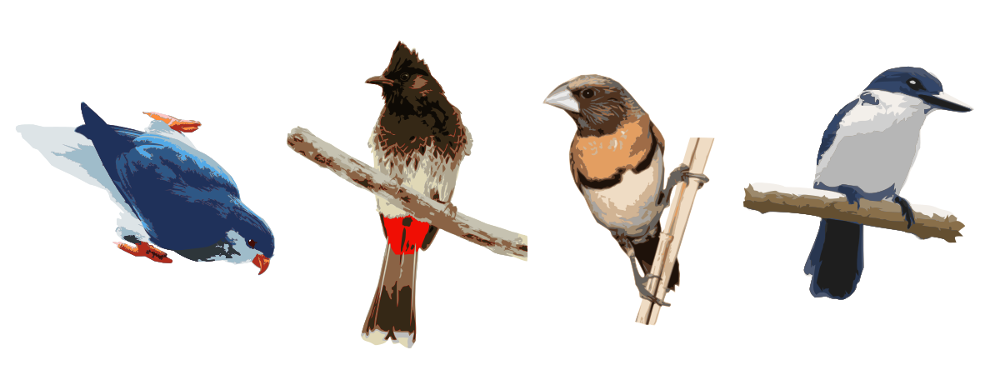

Drivers of birdsong evolution
My PhD project aims to understand the evolution of bird song in introduced populations in French Polynesia. Bird song is a complex trait: it is partly learned through social interactions and partly innate, which makes it sensitive to a wide range of ecological and evolutionary forces. By studying bird introductions, I can investigate how isolation, small population sizes, and novel environments shape song diversity, structure, and perception. The islands of French Polynesia provide a unique framework, as they host simple bird communities, high levels of replication, and well-documented invasion histories that allow me to explore divergence at multiple time scales.
During my first year, I established a large-scale passive acoustic monitoring program across several islands, including Tahiti, Moorea, the Australs, and Huahine, resulting in thousands of hours of recordings. These datasets allow me to analyze multiple dimensions of acoustic behavior, from diel and seasonal patterns of singing activity to the diversity and structure of repertoires. I focus particularly on introduced species such as the Common Myna, Red-vented Bulbul, Zebra Dove, and Chestnut-breasted Munia, which differ in learning abilities and repertoire complexity. I am combining manual annotations with machine learning approaches, using pretrained models such as BirdNet or VGGish, to identify species and extract deep audio embeddings. This pipeline enables me to test hypotheses about founder effects, community influence, and habitat-driven differences in acoustic traits.
I am also beginning to investigate song perception through playback experiments, which will shed light on how divergence in song affects recognition among conspecifics and interactions with other species. In addition, I am working on the analysis of soundscapes to evaluate how the balance between invasive and native species shapes the overall acoustic environment of islands. While introduced birds form the core of my models, I am also interested in describing the repertoires of native species, which remain poorly documented, and in assessing how they interact with invasive species. Altogether, this research will contribute to a better understanding of the forces driving cultural and behavioral evolution in birds, while also providing insights into the ecological impacts of biological invasions in high-endemism ecosystems such as French Polynesia.